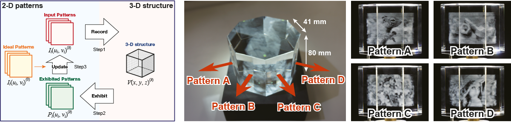

|
Ryuji Hirayama, Hirotaka Nakayama, Atsushi Shiraki, Takashi Kakue, Tomoyoshi Shimobaba, and Tomoyoshi Ito, Optics Express 24(7), 7319–7327 (2016) [Paper link]. |
|  |
|
A three-dimensional (3D) structure designed by our proposed algorithm can simultaneously exhibit multiple two-dimensional patterns. The 3D structure provides multiple patterns having directional characteristics by distributing the effects of the artefacts. In this study, we proposed an iterative algorithm to improve the image quality of the exhibited patterns and have verified the effectiveness of the proposed algorithm using numerical simulations. Moreover, we fabricated different 3D glass structures (an octagonal prism, a cube and a sphere) using the proposed algorithm. All 3D structures exhibit four patterns, and different patterns can be observed depending on the viewing direction. |